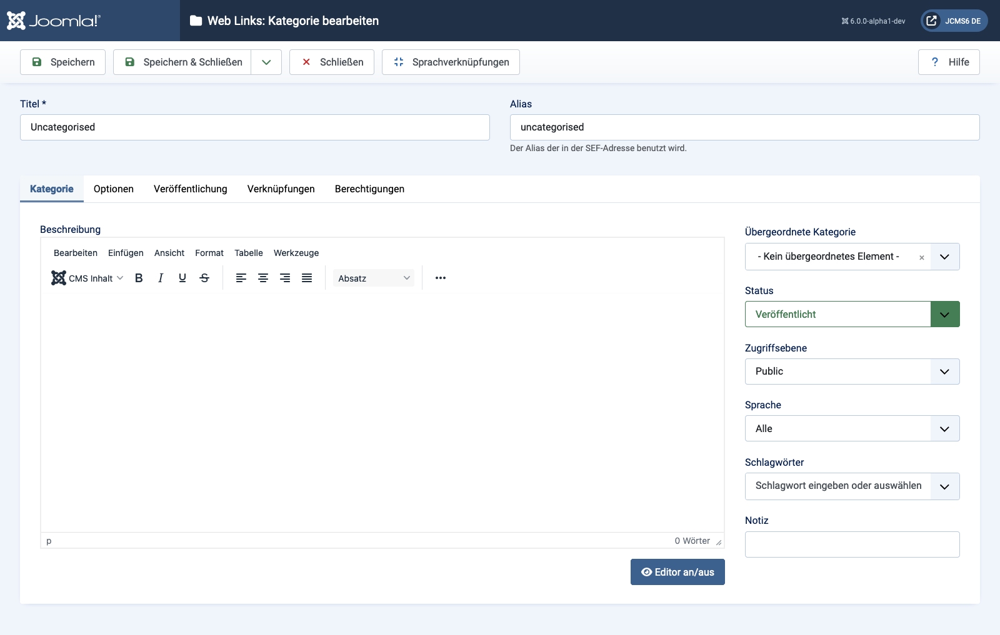

Joomla Help Screens
Weblinks: Kategorie bearbeiten
Beschreibung
Die Seite Weblinks: Kategorie bearbeiten wird verwendet, um eine neue Kategorie zu erstellen oder eine bestehende zu bearbeiten. Beachten Sie, dass Sie mindestens eine Weblink-Kategorie erstellen müssen, bevor Sie einen Weblink erstellen können. Weblink-Kategorien sind von anderen Kategorietypen, wie z. B. Artikel-, Banner- und Nachrichtenkategorien, getrennt.
Allgemeine Elemente
Einige Elemente dieser Seite werden in separaten Hilfsartikeln behandelt:
- Werkzeugleisten.
- Der Optionen-Tab.
- Der Veröffentlichungs-Tab.
- Der Verknüpfungen-Tab.
- Der Berechtigungen-Tab.
Zugriff
- Wählen Sie Komponente → Weblinks → Kategorien aus dem Administrator-Menü. Dann...
- Wählen Sie die Neu-Schaltfläche in der Werkzeugleiste, um eine neue Kategorie hinzuzufügen. Oder...
- Wählen Sie einen Titel aus der Spalte Titel, um eine bestehende Kategorie zu bearbeiten.
Screenshot

Formularfelder
- Titel Der Titel dieses Elements. Dieser kann je nach gewählten Parameterwerten auf der Seite angezeigt oder verborgen werden.
- Alias Der interne Name des Elements. Normalerweise können Sie dieses Feld leer lassen, und Joomla wird einen Standardwert basierend auf dem Titel in Kleinbuchstaben und mit Bindestrichen anstelle von Leerzeichen einfügen.
Kategorie-Tab
Linkes Panel
- Beschreibung Die Beschreibung für das Element. Kategorien-, Unterkategorien- und Weblink-Beschreibungen können auf Webseiten angezeigt werden, abhängig von den Parametereinstellungen.